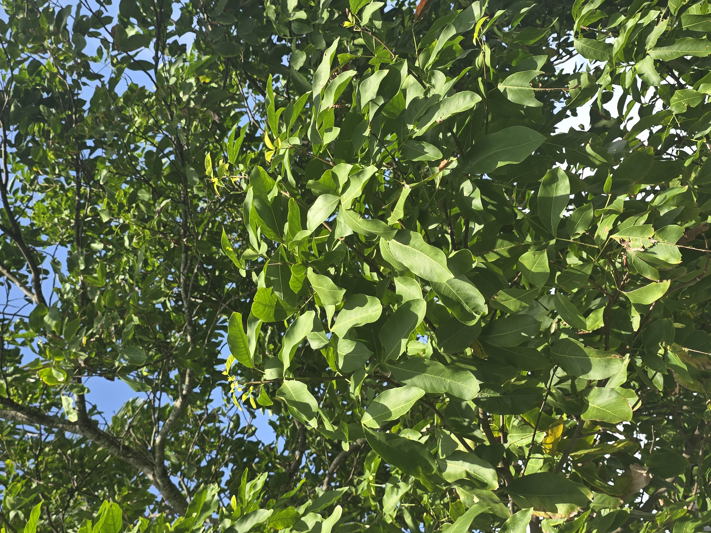
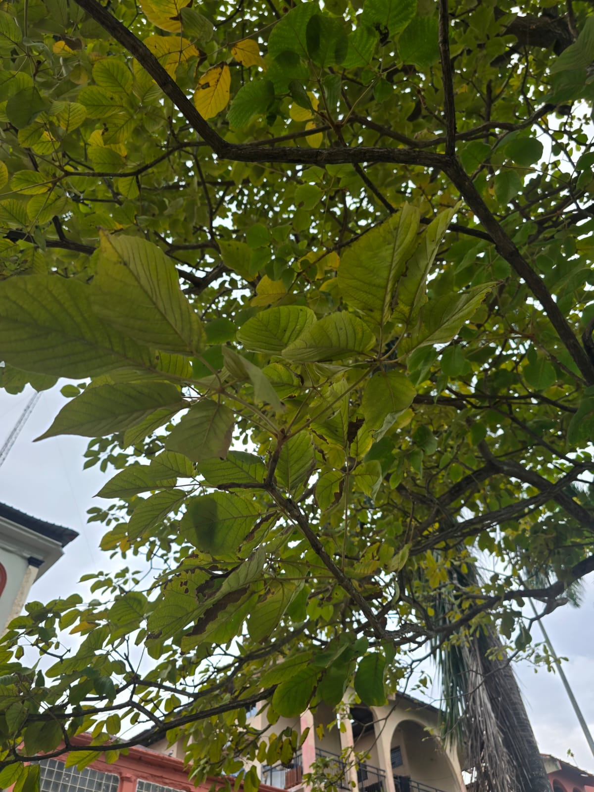
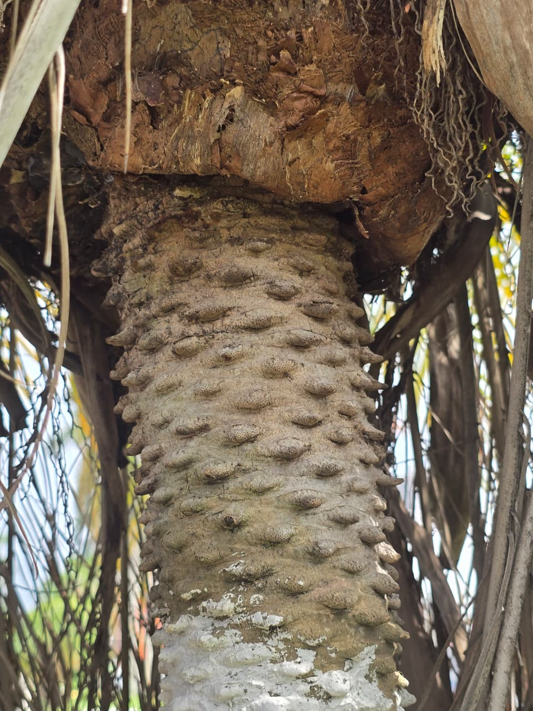
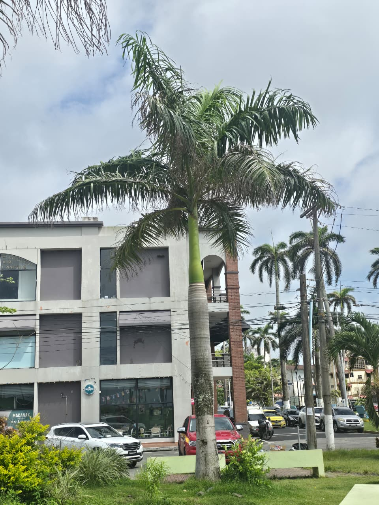
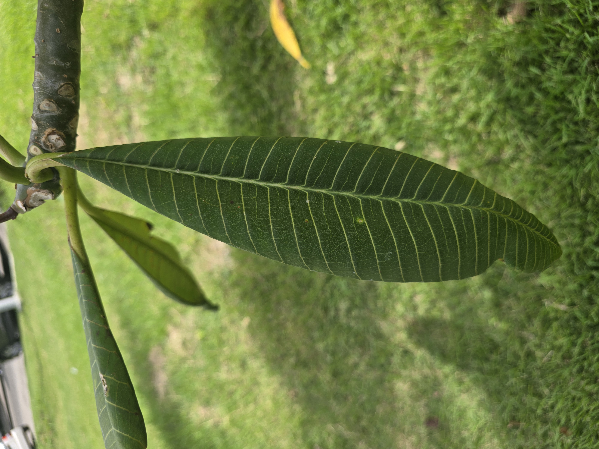
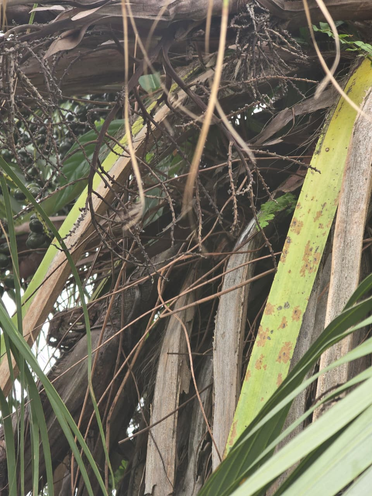
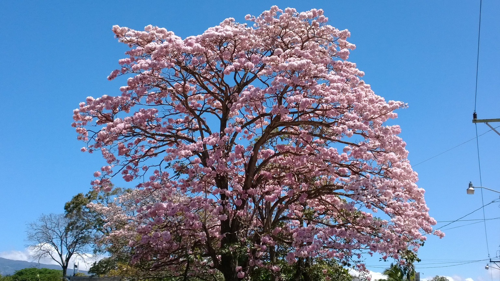
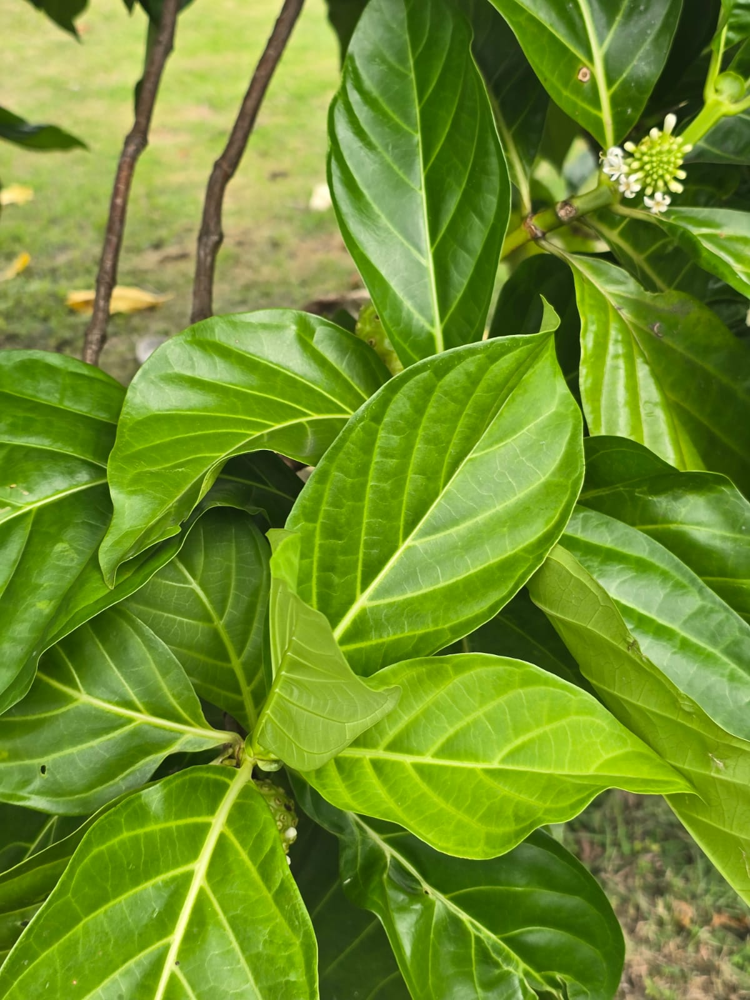
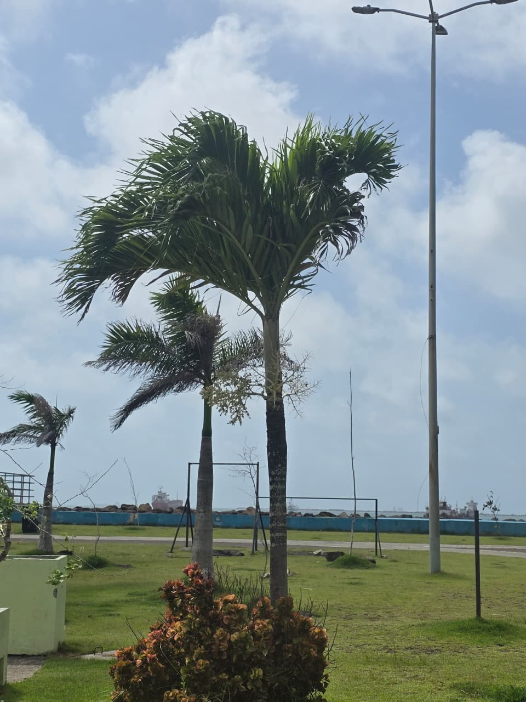

Comparte fácilmente el acceso al catálogo ecológico.
ciencias.onrender.com

Te damos la bienvenida a una experiencia digital única. Explora la riqueza natural e histórica del Paseo Colón desde la comodidad de tu pantalla, recorriendo cada rincón botánico y monumental a tu propio ritmo.
Acompáñanos en este recorrido guiado de 10 paradas. Revisa la descripción de cada parada y avanza mediante el botón interactivo.
Descripción previa del video...
¡Felicidades por completar el recorrido! Has aprendido sobre la biodiversidad, la riqueza arbórea y los monumentos históricos que adornan la travesía desde Calle 1 a Calle 16.
Hemos catalogado los árboles más representativos y plantas ornamentales de las avenidas y calles 1 a 16. Descubre la biodiversidad que coexiste en Colón.

Guaiacum officinale
Famoso por su llamativa floración de color azul violáceo y su madera extremadamente resistente, aportando sombra densa en las aceras del paseo.

Bursera simaruba
Conocido por su corteza rojiza que se descama fácilmente. Un árbol nativo muy adaptado a la costa y el calor, ideal para control ecológico urbano.

Roystonea regia
Elemento característico de las avenidas y bulevares clásicos, con un tronco esbelto que llega a alcanzar más de veinte metros de altura.





Fichas de árboles e ingredientes naturales del suelo colonense que regulan el ecosistema urbano.
Explora interactivamente la ubicación exacta de las esculturas que decoran nuestro paseo principal.
Te damos la bienvenida a nuestro recorrido histórico interactivo. Te invitamos a descubrir la majestuosidad de los monumentos históricos de Colón, adentrándote en las crónicas que definieron nuestra herencia.
Una magnífica representación en bronce que conmemora el desembarco histórico. Se ubica como uno de los símbolos centrales de la ciudad de Colón.
Escultura erigida para honrar a los próceres de nuestra patria y recordar la fecha fundamental de la soberanía.
Demuestra tus conocimientos sobre la flora, historia y monumentos del Paseo Colón en nuestro minijuego interactivo.
Estamos finalizando el desarrollo del juego ecológico para esta sección. Pronto podrás jugar directamente desde esta pantalla.
Estudiantes e investigadores dedicados al desarrollo, recolección de datos y diseño del catálogo.
Responsable del levantamiento vegetal de las avenidas y catalogación botánica.
Especialista en arquitectura frontend, transiciones dinámicas y buscador predictivo.
Historiador local a cargo de rastrear y digitalizar las actas de monumentos públicos.
Responsable del registro fotográfico, edición de los videos e integración aérea.
Investigadora botánica encargada de la clasificación biológica y documentación.
Coordinador de geolocalización y mapas interactivos del paseo urbano.
Redactor técnico y curador de textos e información patrimonial.
Diseñador del sistema visual y estructuración de la experiencia de usuario.
Gestor de base de datos y optimización de contenido dinámico para la web.
Deja tu comentario sobre el proyecto o comparte tus vivencias en el Paseo Colón.